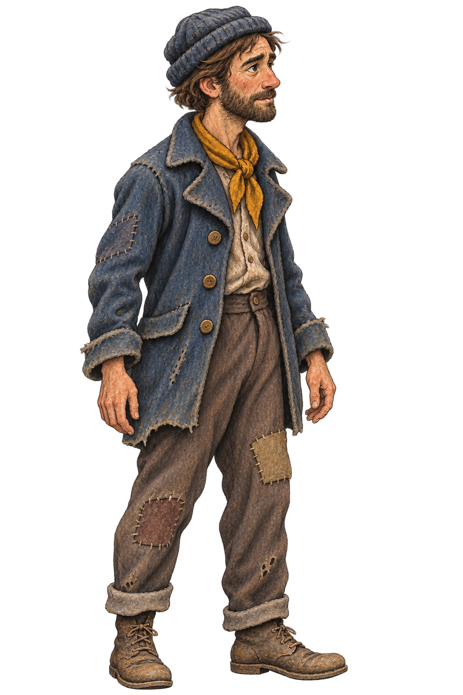

DOKUD SE NEVRÁTÍME
PRVNÍ NOC

I
První noc. Společně.
Přístřeší. Oheň. Znamení pro moře.
Zůstat u ohně
Hrát znovu
První hratelná kapitola adventury
Prozkoumej břeh.
×
●
Jak hrát
Prozkoumej · vezmi · použij
×
×
Adventura potřebuje JavaScript.